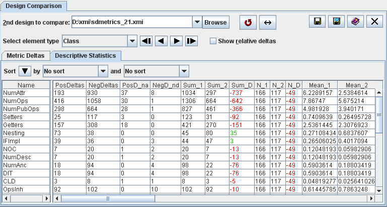

Contents > 4 The SDMetrics User Interface > 4.9 The View 'Design Comparison' > 4.9.3 Comparative Descriptive Statistics Table
4.9.3 Comparative Descriptive Statistics Table
This tab sheet shows a side by side comparison of the descriptive
statistics for both designs. The table shows the metrics by row.

Figure 15: Comparing descriptive statistics
The meaning of the first four columns is as follows:
- PosDeltas: the sum of all positive metric deltas for the
metric.
This indicates how much the metric values increased by adding new
elements or modifying existing ones.
- NegDeltas: the sum of all negative metric deltas for the
metric.
This indicates how much the metric values decreased by deleting
elements from the design, or modifying existing ones.
- PosD_na: the sum of all positive metric deltas for the metric,
excluding added elements.
This indicates how much the metric values have increased by modifying
existing design elements.
- NegD_nd: the sum of all negative metric deltas for the metric,
excluding deleted elements.
This indicates how much the metric values have decreased by modifying
existing design elements.
The remainder of the columns in the table shows the descriptive
statistics including sum, mean, and percentiles for the first design,
second design, and the difference for each descriptive statistic.
| Prev |
Up |
Next |
| Section 4.9.2 "Metric Deltas Table" | Contents | Section 4.9.4 "Mapping Design Elements" |